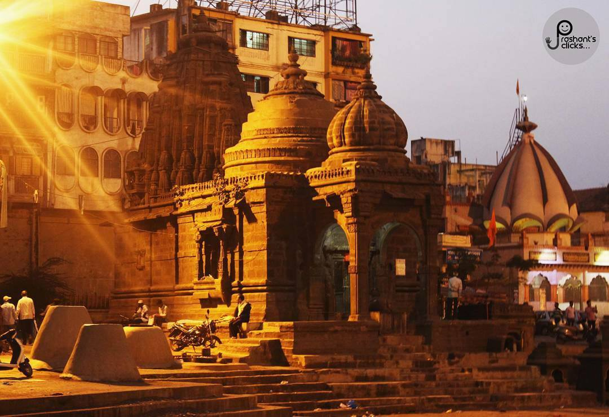
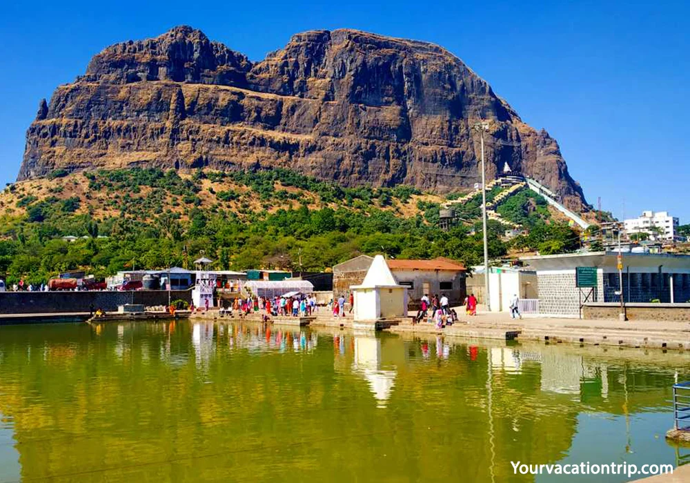
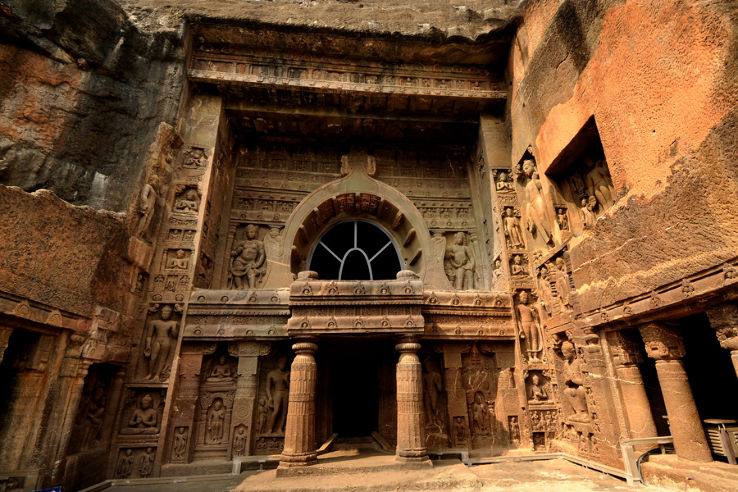
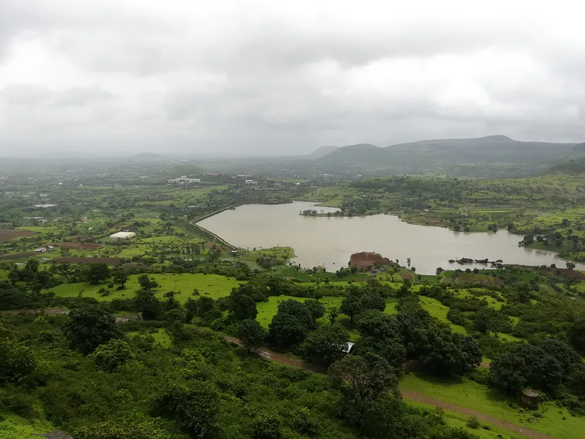
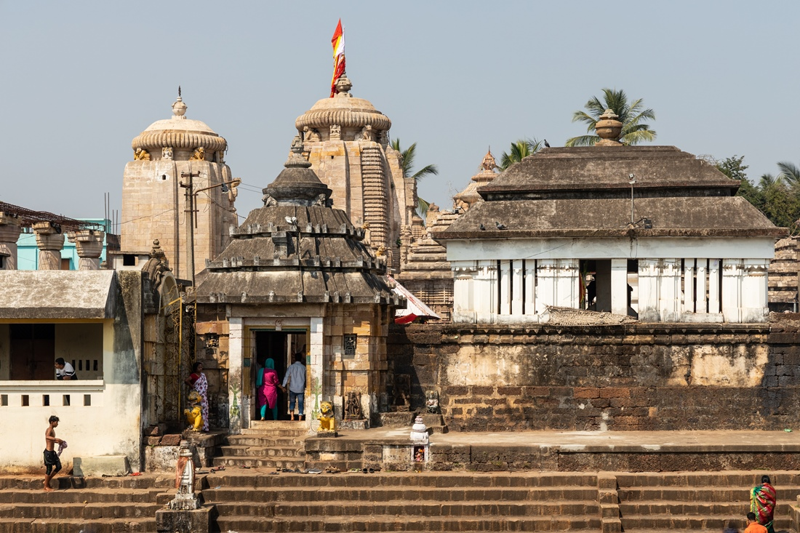
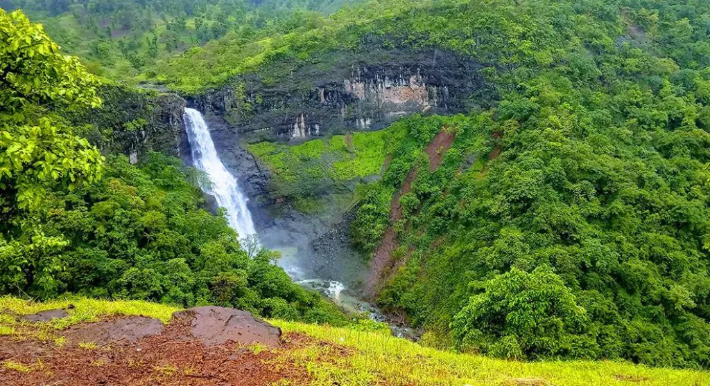

Panchavati
Holy land for the believers of Ramayana, Panchvati attracts a lot of pilgrims. A serene town located
near Nasik, the site offers small sightings having a lot of significance in the epic of Ramayana.
Given the legend of Panchvati, the place holds a lot of religious significance even in the present
day. Sites such as the Kalaram Temple and the Sita Gufaa are on every pilgrims list. The Kumbh Mela
takes place on the river banks of Godavari, and has a surplus of pilgrims from every corner of world
during the occasion.
Sula Vineyard
The Sula Vineyards is a famous winery that is located in Nashik, 180 kilometres to the northeast of
Mumbai and is renowned for its varieties of grape wines, such as Chenin Blanc, Sauvignon Blanc,
Riesling and Zinfandel. The company started from a mere 30-acre estate in Nashik and has now
extended to approximately 1800 acres spread across Nashik and Karnataka. This large estate is open
to the general public for a round of wine tasting and a tour of the vineyard on all days throughout
the year and has gained immense popularity over the years.

Dudhsagar falls
Regarded as one of the best falls in the view, Dhudsagar falls offer a
panoramic view with a spectacular scenery. The cascade is in full verve during the monsoon season
and quiet a sight to behold.

Saptashrungi
Saptashrungi is a Hindu pilgrimage spot located around 60 km from Nasik.
The temple of the goddess Saptashrungi Nivasin is also the half 'Shaktipeeth' of the three and a
half Shaktipeeths located in Maharashtra. It is believed that one of the limbs of the right arm of
Sati (Lord Shiva's wife) fell here. Saptashrungi is surrounded with seven mountain peaks having 108
bodies of water which are called kundas and forests loaded with medicinal herbs.

Trimbakeshwar
T rimbakeshwar Temple is one of the twelve Jyotirlingas in India. Located in Trimbak, 28 kilometres
from Nashik city, this Shaiva temple is found at the foot of Brahmagiri Hills. Established by the
Maratha ruler, Peshwa Nana Saheb in the 18th century, the temple is mentioned in the powerful
Mrityunjaya Mantra that bestows immortality and longevity.

Pandavleni Caves
Located about 8 kilometres to the south of the centre of Nashik in
Maharashtra in India, the Pandavleni Caves, also known as Pandu Caves or Nasik Caves are ancient
rock-cut caves that are situated on the tableland of the Trivashmi Hills. These caves date back to
the period between the 3rd century BC and 2nd century AD. The Pandavleni caves are a group of 24
caves that represent Hinayana Buddhism. The mystic caves also comprise of musical fountains, museums
and various outlets of food.

Anjaneri Hills
Believed to be the birthplace of Lord Hanuman, Anjaneri derives its name from Hanuman's mother
Anjani. Perched in the picturesque mountain range of Nashik-Trimbakeshwar, Anjaneri fort is at a
distance of ~20 km from Nashik.
Apart from its spiritual significance, Anjaneri is also a popular spot for hikers.

Kapileshwara Temple
One of the oldest instances of this pilgrim city, this is a Shiva temple
surrounded by a hint of mystery due to the absence of a statue of Nandi Bull, usually found in all
Shiva Temples. Close to the Kalaram temple, this is one of the most frequented temples in the city.

Dugarwadi Waterfalls
Situated at 177 kms from Mumbai in Nasik, Dugarwadi Waterfalls is a beautiful cascade of water
amidst verdant greenery, enveloped in mountains. Dugarwadi waterfall is a hidden gem deep within the
green folds of Sahyadri forests. The falls is a couple of kilometres walk from the parking at
Sapgon.